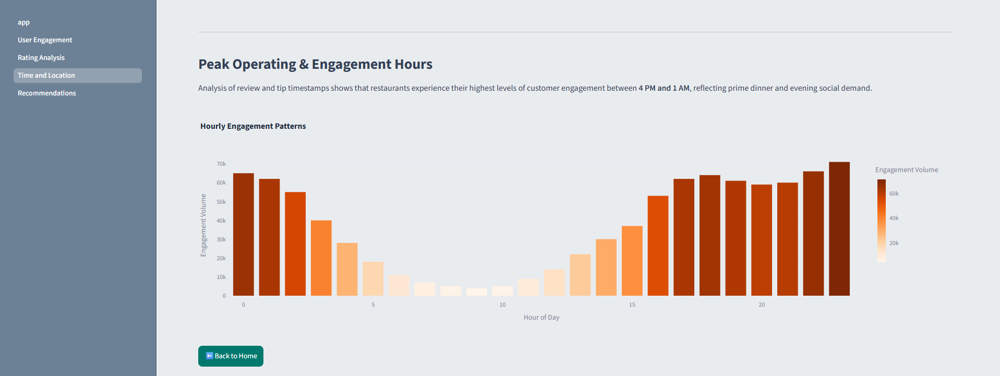
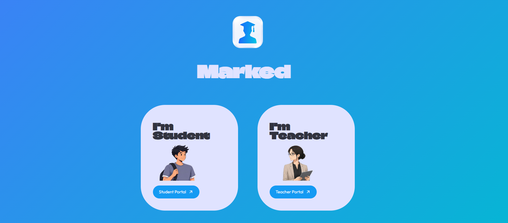
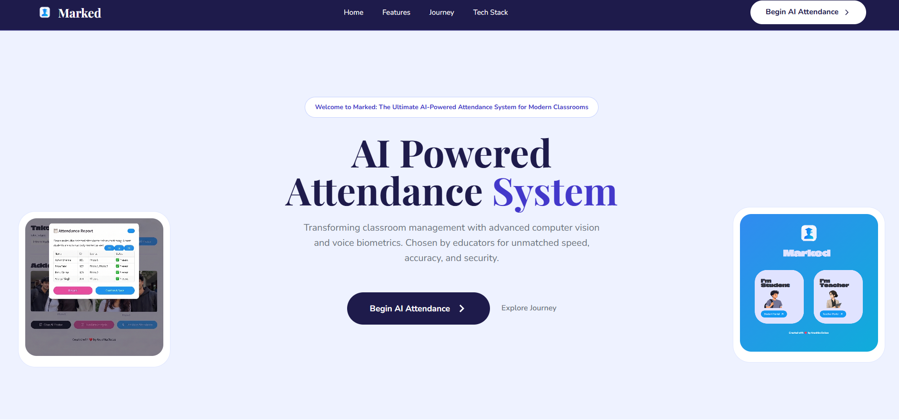
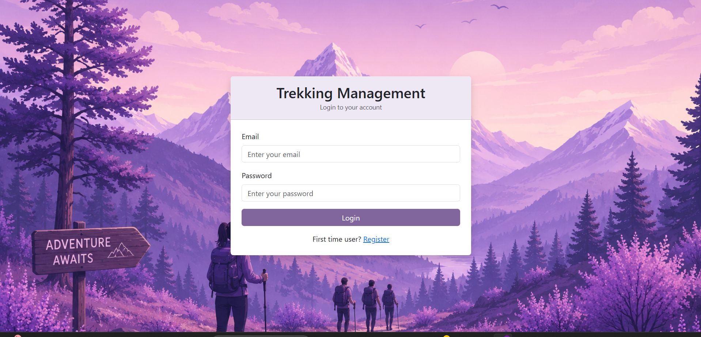

Yelp User-Engagement analysis
Developed an interactive Streamlit analytics platform using the Yelp dataset to evaluate engagement dynamics and ratings across 35,000+ open restaurants.
- Structured raw JSON logs into SQLite, running SQL queries to reveal key engagement correlations (r = 0.75) and peak activity windows (4 PM–1 AM) via NLTK VADER sentiment analysis.
- Engineered interactive Plotly geospatial and time-series maps, uncovering that 4.6% of elite users drive ~44% of total reviews.

Comparative Marketing Campaign Analysis
Built an interactive multi-page Streamlit analytics platform to evaluate advertising ROI and campaign metrics across a 365-day dataset comparing Facebook Ads and Google AdWords.
- Executed statistical testing (SciPy/Statsmodels) and linear regression (Scikit-Learn, R^2 = 76.35%), proving Facebook's higher daily conversion rate (11.74 vs 5.98) and ROAS (1528.27% vs 475.67%).
- Automated time-series data wrangling in Pandas and Seaborn to identify seasonal CPC patterns, surfacing cost-effective budget allocation windows in May and November.

Credit Card Financial Dashboard
Engineered an end-to-end financial dashboard in Power BI connected to PostgreSQL, analyzing $57M+ in total revenue and 667K+ transactions for real-time portfolio insights.
- Developed dynamic DAX measures and SQL pipelines to track WoW revenue trends and segment 10K+ customer profiles across top states (TX, NY, CA).
- Automated weekly reporting workflows via live database connections to interactive Power BI visuals, enabling dynamic filtering by income bracket and card tier.

AI- Attendance System
Designed and deployed a framework-free, responsive product showcase platform for the Marked AI ecosystem using Flask and custom HTML5/CSS3.
- Implemented zero-dependency scroll animations via native JavaScript IntersectionObserver API and built a scalable CSS system with :root variables across 4 custom breakpoints.
- Configured Gunicorn and Vercel serverless deployment pipelines with static asset optimization to deliver a low-latency marketing site.

AI- Attendance Landing Page
Engineered a full-stack automated attendance platform in Streamlit to process classroom photos and identify student facial embeddings in under 1 second.
- Developed dual CV and audio ML pipelines (dlib/face_recognition, Librosa/webrtcvad) for multi-student facial detection and acoustic voice verification fallbacks.
- Architected a real-time Supabase (PostgreSQL) data layer with bcrypt auth to log timestamped attendance, passwordless Face ID logins, and role-based analytics.

Trekking Management System
Architected an end-to-end web application in Flask and SQLAlchemy to automate trek scheduling, user bookings, and staff management across 3 distinct user roles (Admin, Staff, Trekker).
- Engineered RBAC authentication with password hashing and administrative approval workflows for staff onboarding, maintaining secure role-based access.
- Implemented transactional booking logic with backend validation in SQLite to eliminate overbooking risks, enforce status constraints, and enable admin user-blacklisting.